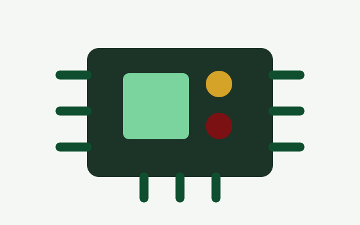
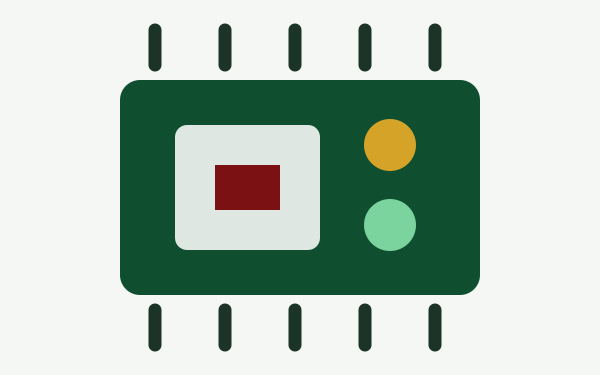
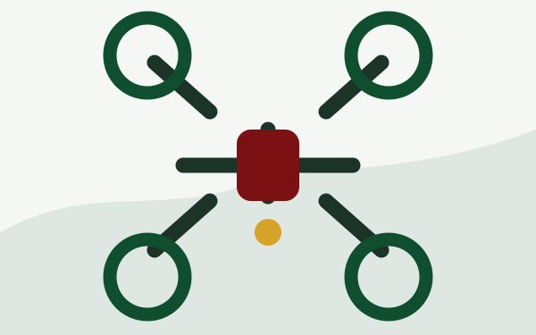

Digital Fabrication and Rapid Prototyping
3D printers support the rapid fabrication and iteration of custom enclosures, mounts, fixtures, and mechanical components for research prototypes.
ARTS brings together fabrication, electronics, embedded computing, aerial and vision systems, and self-hosted data infrastructure for agricultural technology development. Activities are based at the Agribiosystems Machinery and Power Engineering Division of IABE, CEAT, UPLB. Open the laboratory location in Google Maps.
3D printers support the rapid fabrication and iteration of custom enclosures, mounts, fixtures, and mechanical components for research prototypes.

Arduino-based boards, sensors, and actuators enable hands-on development of instrumentation, control, and agricultural monitoring systems.

NVIDIA Jetson and Raspberry Pi small-board computers support edge AI, machine vision, automation, and data-processing workflows.
Bench equipment includes soldering tools, multimeters, voltage and current generators, and other instruments for circuit assembly, testing, and troubleshooting.

Agricultural drones support aerial data collection, crop observation, and field-validation activities.
Vision cameras support image acquisition, crop and equipment inspection, and the development of computer-vision applications.
ThingsBoard at UPLB provides a self-hosted environment for device telemetry, dashboards, data visualization, and decision-support workflows.
The laboratory supports the full development cycle: design, fabrication, electronics integration, embedded computing, data collection, visualization, and field validation.